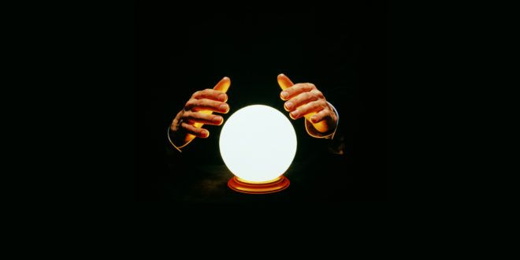

WiLLkommen zu deiner 2026 Prophezeiung
Powered by Creative Coding
Mit der Glasskugel Machine wirst du herausfinden können, wie dein 2026 aussehen wird.
Anleitung: PIN 12 (Intro), 27 (Middle) und 33 (Outro) anstecken, dann mit ESP verbinden ('Connect to ESP').
Alternativ können auch die Tasten "I" (Intro), "M" (Middle) und "O" (Outro) gedrückt werden.